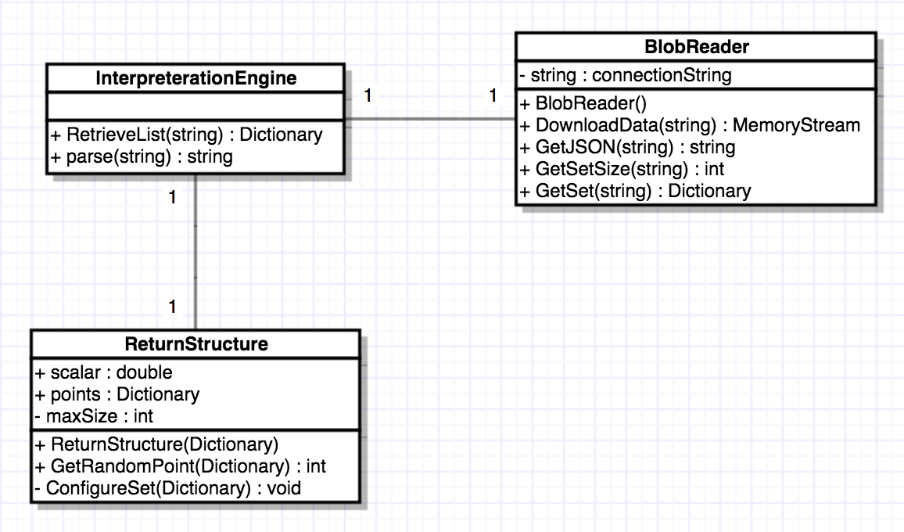
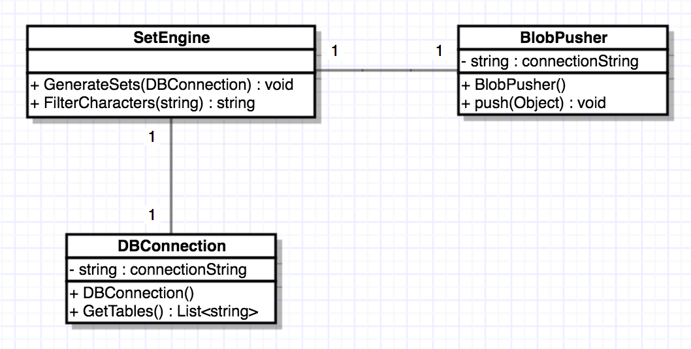
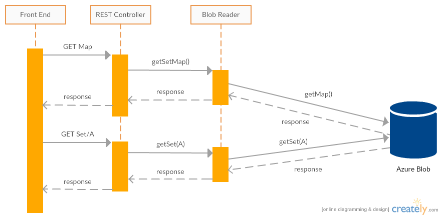
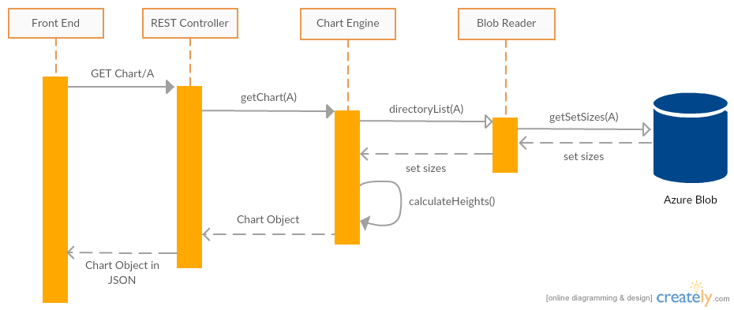
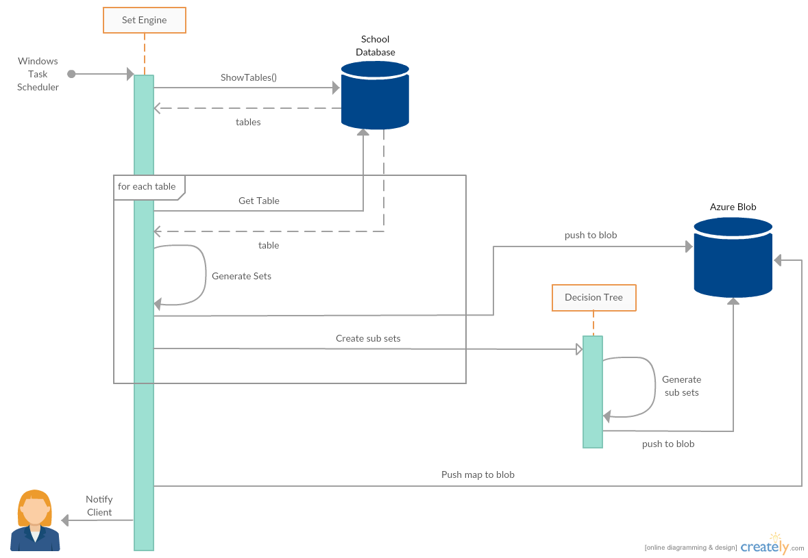

System Architecture
The system is comprised of three major components. The REST API, the Chart Engine and the Set Engine. Additionally there are several important subcomponents including general purpose Readers, Writers and a number of helper classes to help facilitate the running of each major component. Data is stored in a blob on Azure.
-
The Set Engine
This program generates sets and writes the sets to the Azure blob. The Set Engine does not need to know the structure of the database in order to generates the sets but splits tables into columns and generates sets based on the column data. The Set Engine should be run automatically a weekly basis using the Windows Task Scheduler to ensure data on the blob is up to date. After every run of the Set Engine results are emailed to whomever the user desires. -
The Chart Engine
The Chart Engine is a general purpose program for generating charts. The idea originally came from the fact that Team 1 were generating the charts based on our data. This can be very slow as we will need to send many sets to Team 1 in order for them to generate charts. If we instead move the Chart Engine to the backend then the charts can be generated much faster because no sets will be required to be sent to the frontend which can be very slow depending on the size of the set. -
The REST API
The REST API... -
Supporting Libraries
During the development of the three programs above we developed several libraries that were regularly used throughout the course of the project. The Blob Reader and Writer classes were the main classes that were used most extensively. Some additional important libraries include a Graph Retriever that is used to link the REST API to the Chart Engine, a database generation tool that we created to generate sample databases and a simple decision tree that we used to classify data types which was needed for the Set Engine.
Class Diagrams
UML diagram for the Chart Engine

UML Diagram for Interpretation Engine

UML Diagram for Set Engine

Design Pattern
Decision Tree Design: Singleton Ensure a class has only one instance, and provide a global point of access to it.
- Singleton
- Model View Controller
- Fork/Join Pattern
- Optionals For Testing Complex Functions
- Information Tagging
Sequence Diagrams
During the development of our system we created several sequence diagrams. We used Creately to create the sequence diagrams.
Retrieving a Set
When a GET requests arrives from the Front End it is received by the REST Controller. The Developer is encouraged to first retrieve the map of the sets so they know which sets they can call (Note that is is optional and recommended). The Front End then calls the Set which follows the same procedure but returns the full set.
Retrieving a Chart
Alternatively the developer can call a Chart object using the API by specifying the set (A) which will return the chart for set A.
Set Creation Process
When the Windows Task Scheduler initiates the Set Engine to start the Set Engine beings by retrieving all tables from the database it specified to read from. The Set Engine then attempts to generate sets for each table in the database and sub sets using its Decision Tree. The Set Engine immediately pushes sets to the Azure Blob after each set is created. When all tables have been checked the Set Engine pushes a map to the blob that contains the location of each set it has created. The Set Engine then emails the system administrator with details on the latest run.
Development Tools
Communication: Skype, Slack, Visual Studio Team Service
File Storage: One Drive, Azure Cloud
Version Control: GitHub
IDE: Visual Studio 2015
Implementation
implementation details of key functionality